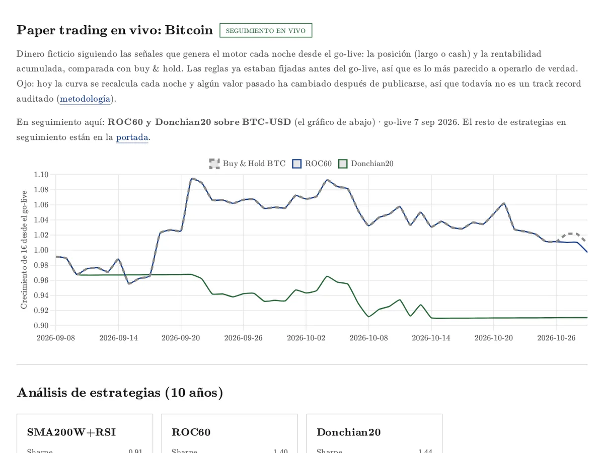
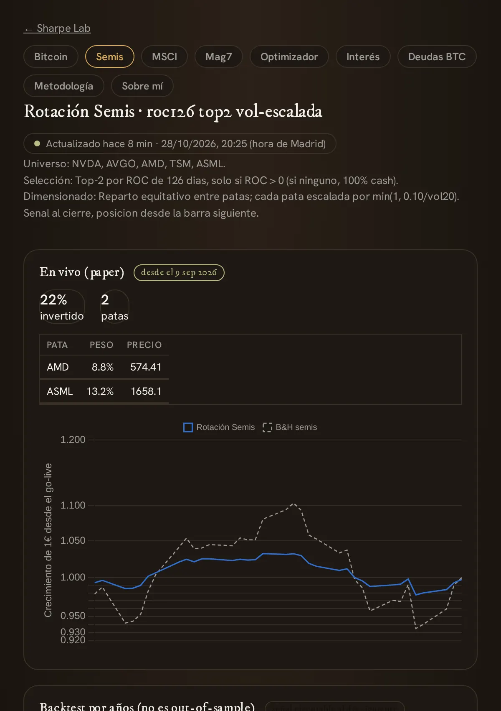
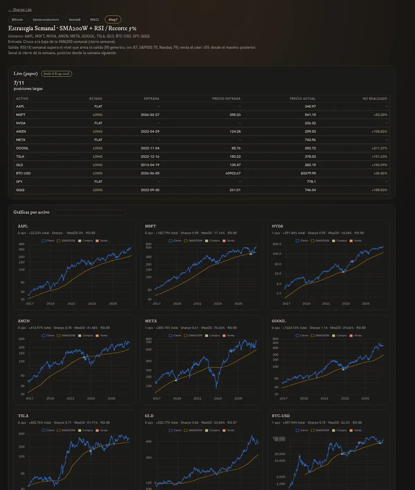
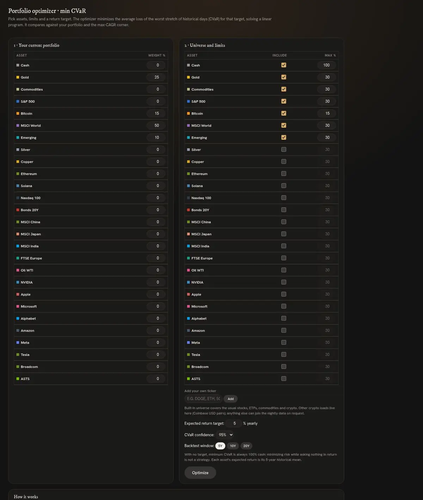
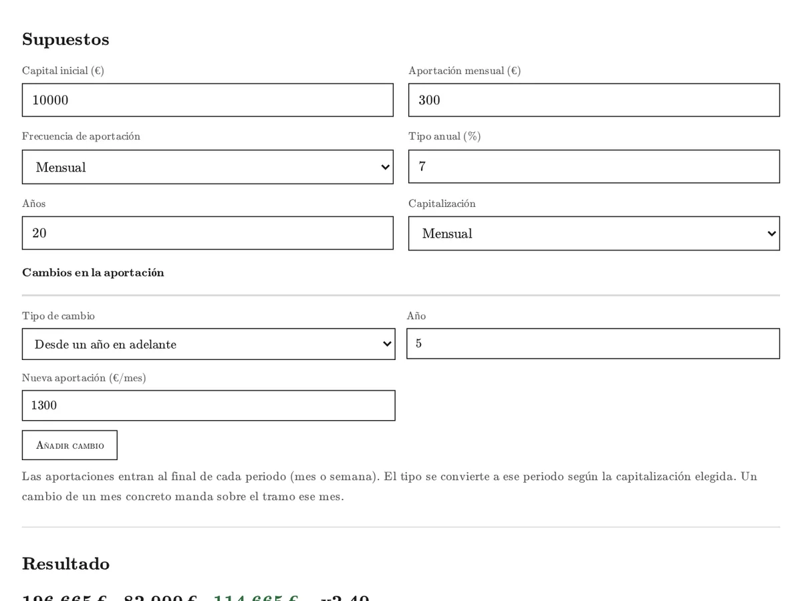
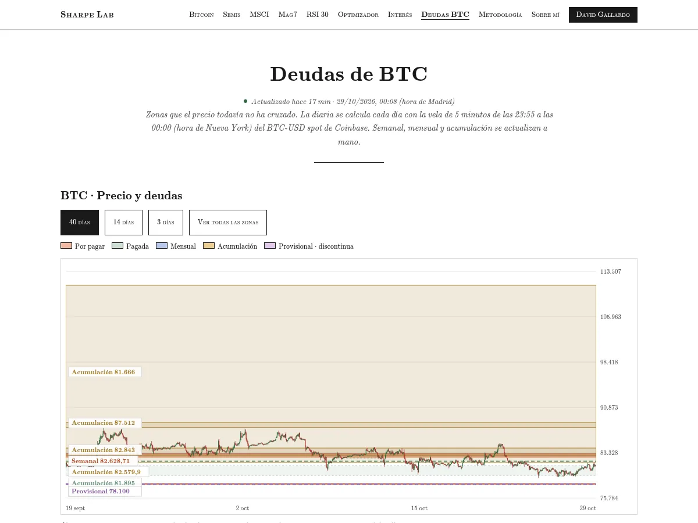

Sharpe Lab
Estrategias cuantitativas · backtests con costes
Paper trading en vivo
Paper trading en vivo
Comprobando la fecha de los datos…
Cada estrategia que estudio, probada con costes y seguida en vivo. Además, un optimizador de carteras y algunas calculadoras.
1.Herramientas

BitcoinPaper trading con señales reales cada noche.Abrir →
SemisLos dos chips con más impulso, con la volatilidad a raya.Abrir →
Mag7Once activos y una regla semanal.Abrir →
Optimizador CVaRLa mezcla menos arriesgada para la rentabilidad que buscas.Abrir →
Interés compuestoIntereses que generan intereses.Abrir →
Deudas BTCZonas que el precio aún no ha cruzado.Abrir →2.Más
3.Aviso
Paper trading en vivo y backtests con costes. Sharpe Lab es un proyecto personal de aprendizaje: nada de esto es asesoramiento de inversión, y la rentabilidad pasada no garantiza rentabilidades futuras.